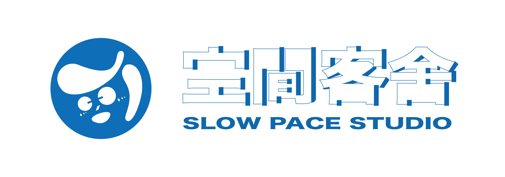

<style>
    /* 頁首專屬全站通用設定 */
    .navbar-wrapper {
        width: 100%;
        background-color: #ffffff;
        display: flex;
        justify-content: center;
        border-bottom: 1px solid #EAEAEA;
    }
    .navbar {
        width: 100%;
        max-width: 1600px; 
        display: flex;
        justify-content: space-between;
        align-items: center;
        padding: 35px 50px;
    }
    .logo-area {
        display: flex;
        align-items: center;
        gap: 20px;
    }
    .logo-icon img {
        height: auto;           /* 讓寬度決定高度，維持比例 */
        max-height: 120px;      /* 設定一個上限，防止變太巨大 */
        width: auto;
        object-fit: contain;
    }
    .logo-text .ch {
        font-size: 2.3rem;
        font-weight: 700;
        color: #1465A3;
        letter-spacing: 3px;
        line-height: 1.1;
    }
    .logo-text .en {
        font-size: 1.1rem;
        font-weight: 600;
        color: #1465A3;
        letter-spacing: 1px;
    }
    .nav-links {
        display: flex;
        gap: 35px;
    }
    .nav-links a {
        text-decoration: none;
        color: #333333;
        font-size: 1.25rem;
        font-weight: 500;
        transition: color 0.2s;
    }
    .nav-links a:hover {
        color: #1465A3;
    }

    /* 頁首響應式手機板優化 */
    @media (max-width: 1024px) {
        .navbar { padding: 25px 30px; }
        .logo-icon img { height: 55px; }
        .logo-text .ch { font-size: 1.8rem; }
        .nav-links a { font-size: 1.1rem; }
    }
    @media (max-width: 768px) {
        .navbar { flex-direction: column; gap: 20px; padding: 20px; }
        .nav-links { flex-wrap: wrap; justify-content: center; gap: 15px; }
    }
</style>

<header class="navbar">
    <div class="logo-area">
        <div class="logo-icon">
            
        </div>
        <div class="logo-text">

        </div>
    </div>
    <nav class="nav-links">
        <a href="index.html">自主企劃 Passion Project</a>
        <a href="about.html">活動報名</a>
        <a href="month.html">客舍時間表</a>
        <a href="#">客棧時間表</a>
        <a href="#">客舍電子報</a>
        <a href="#">客舍萬事屋</a>
        <a href="#">更多</a>
    </nav>
</header>